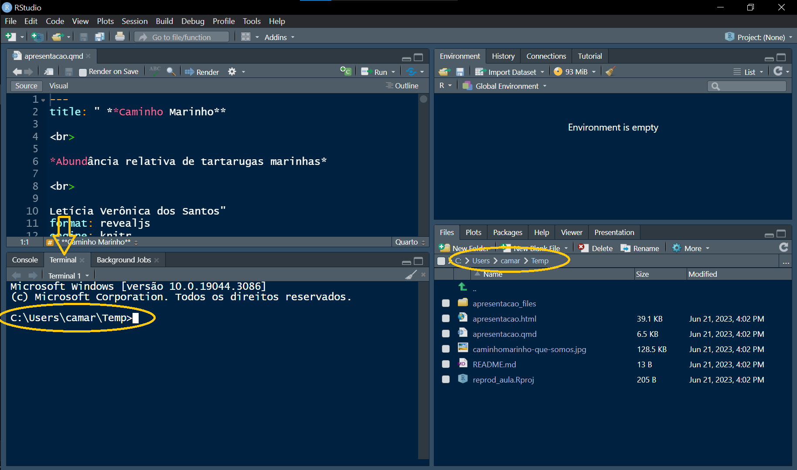
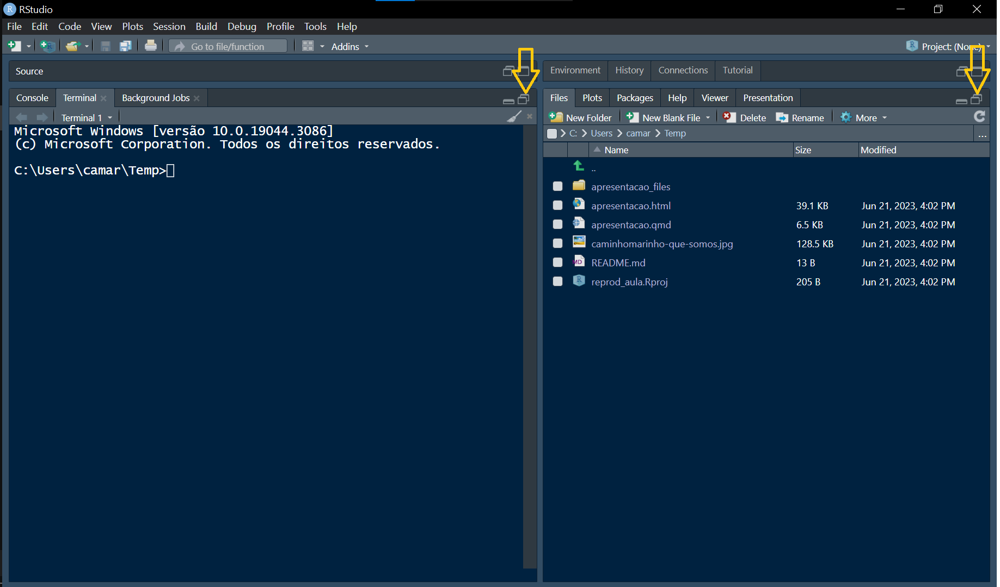
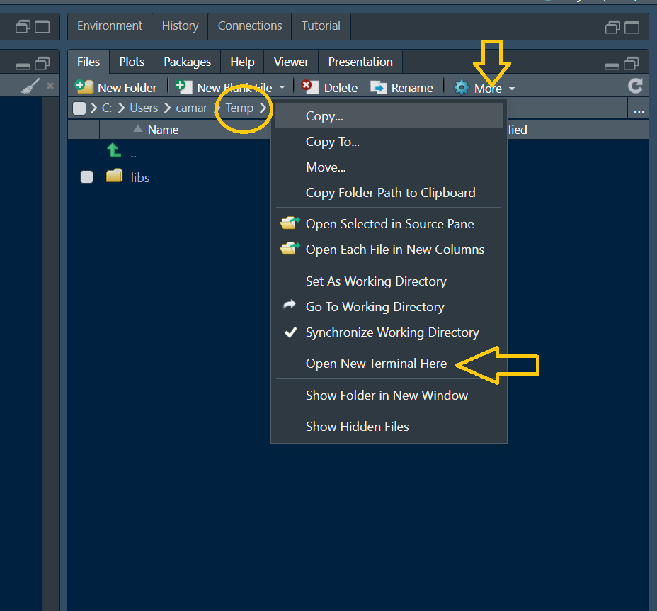
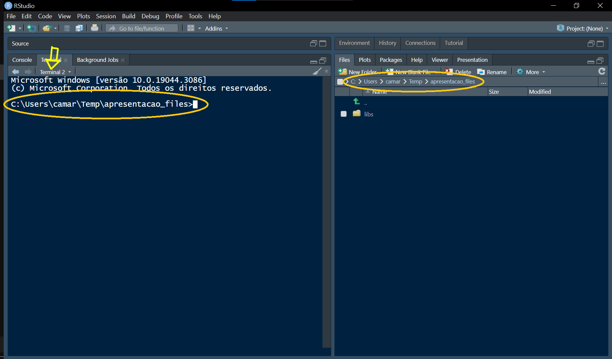
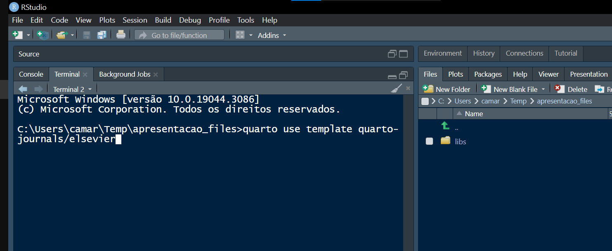
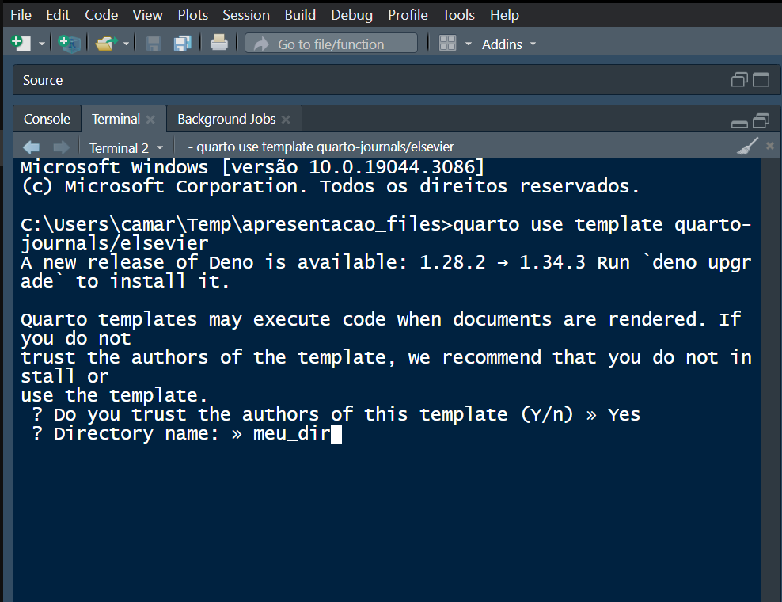
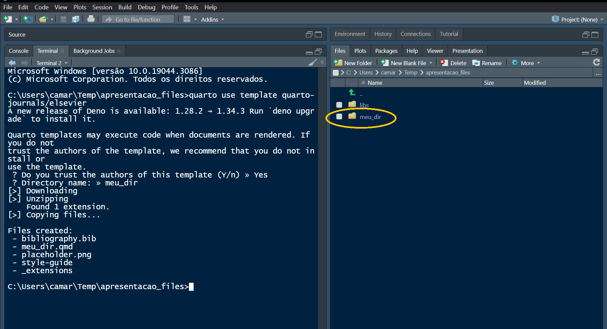
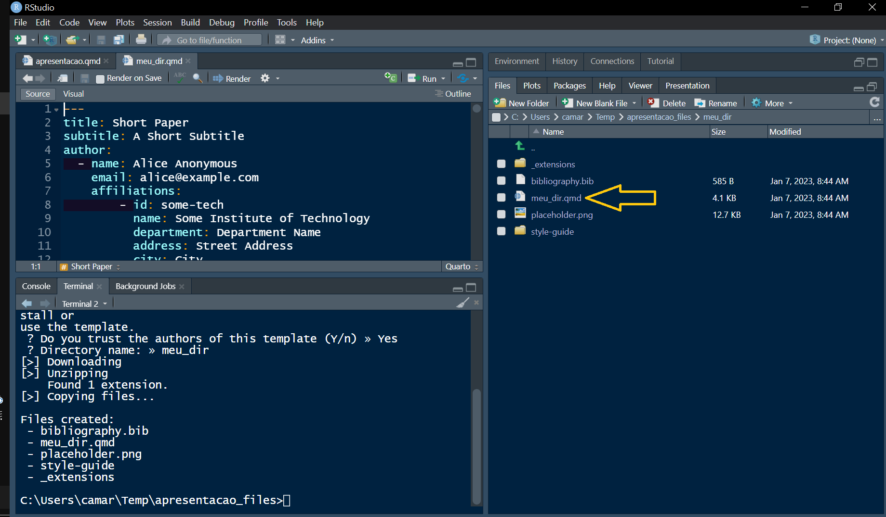

Como gerar templates para revistas da Elsevier
Antes de mais nada, é preciso instalar o pacote tinytex, que serve para instalar toda a infra-estrutura do LaTeX para lidar com PDFs.
install.packages('tinytex')
tinytex::install_tinytex()Pessoal, o template da Elsevier que tentamos colocar no RStudio através do terminal deu problema para mim por causa da confusão entre as pastas criadas. Acredito que para muitos foi a mesma coisa.
No entanto, existe uma maneira muito prática no RStudio de trabalhar com pastas no terminal.
Ao invés de precisar escrever todo o caminho, tipo c:\user\mauricio\projeto_aula, podemos usar o gerenciador de arquivos do próprio RStudio.
Observe a figura abaixo e localize o Terminal e o gerenciador de arquivos (Files). Os caminhos destacados devem ser os mesmos (este é o caminho do seu projeto).

As duas janelas inferiores podem ser maximizadas usando os botões destacados abaixo. Isso facilita o trabalho.

É possível sincronizar os caminhos das duas janelas usando o gerenciador de arquivos, sem a necessidade de escrever o caminho inteiro no terminal.
A opção Open New Terminal Here abre um novo terminal apontando para o mesmo caminho do gerenciador de arquivos. Nesta pasta (=diretório) o template será instalado.

Observe que um novo terminal foi criado, chamado de Terminal2.

Agora é hora de incluir os comandos para baixar o template da Elsevier, que pode ser encontrado em https://github.com/quarto-journals/elsevier#installation-for-existing-document
O comando é:
quarto use template quarto-journals/elsevier
Após confirmar que confia no autor do template, informe o nome do novo diretório onde será instalado o template (meu_dir).

Observe no gerenciador de arquivos que o diretório meu_dir foi criado.

Dentro deste diretório encontre o arquivo meu_dir.qmd. Este é o seu template. Clique ne e tente renderizar o pdf.

Boa sorte!